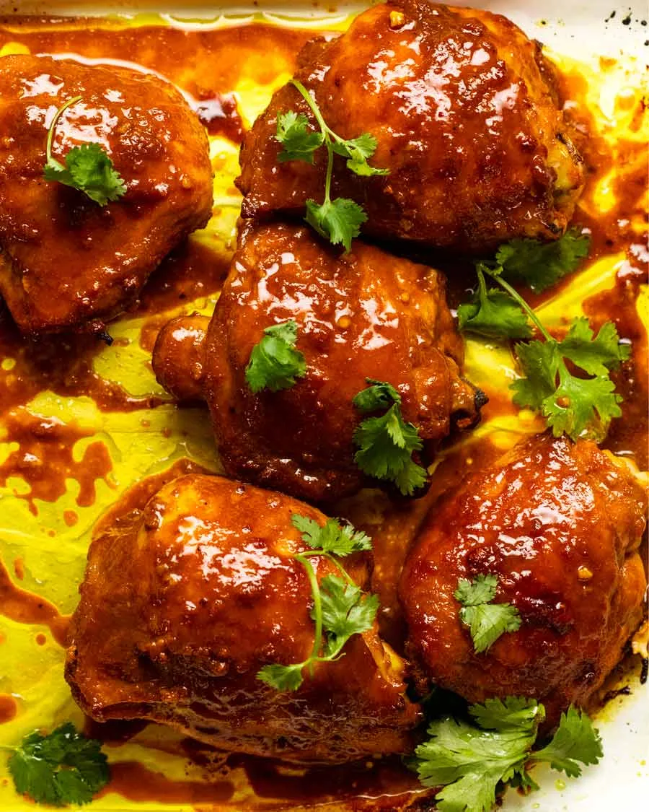

Gai Yang Khamin Southern Thai Turmeric Chicken

Description:
A Southern Thai street food. Traditionally grilled over coals using butterflied whole chicken.
Ingredients
- 5 large chicken thighs (bone-in)[can use 1.2kg of any type of chicken]
- 4 garlic cloves
- 2 tbsp fish sauce
- 2 1/2 tbsp oyster sauce
- 1 tsp white pepper
- 1 tbsp ground turmeric
- 1/4 cup brown sugar (packed)
Steps
- Mix all non-chicken ingredients in a large bowl. Then add chicken and toss to coat.
- Marinate for at least 3 hours.
- Place chicken on a baking paper lined tray, skin side up. Scrape all marinade out the bowl and put on chicken.
- Bake for 40 mins at 180 degrees (160 fan forced). Basting at the 30 and 40 minute mark using the juices.
- Increase temperature to 200 degrees (180 fan forced) and cook for 10 more minutes.
- Rest for 3 minutes and serve with jasmine or coconut rice.